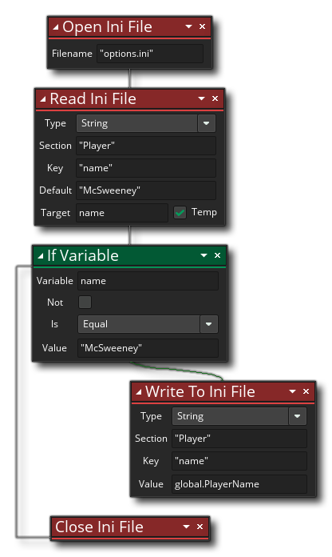

Descripción
Esta acción cerrará el archivo Ini actualmente abierto. Esta acción se debe llamar en el momento en que termine de leer o escribir en cualquier archivo Ini abierto (los archivos Ini se abren con la acción Abrir archivo Ini ). Si no usa esta acción después de haber utilizado la acción Escribir en Archivo Ini, entonces no se escribirá nada en el disco ya que la información del archivo se guardará en la memoria hasta que se llame a esta acción, en ese punto se tomará de la memoria y se escribirá en el archivo en el disco. También tenga en cuenta que si intenta abrir un archivo Ini sin haber cerrado previamente otro (o el mismo) obtendrá un error.
Sintaxis de acción:

Ejemplo:
El código de bloque de acción anterior abrirá un archivo ini para su uso, luego obtendrá el valor asociado con la tecla "nombre" debajo del encabezado "Reproductor". Si el nombre devuelto coincide con el valor de nombre predeterminado (es decir, el archivo, sección o clave no existe), entonces el archivo tiene una variable global escrita antes de que se cierre (y escriba los datos nuevos en el disco).